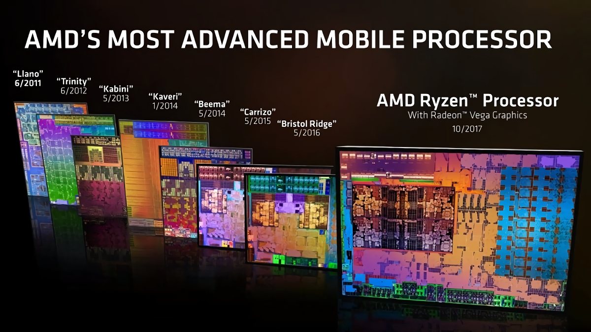

History

In the five years before the release of Ryzen, AMD's direct competitor in the x86 and x86-64 consumer-level CPU marketspace, Intel, had continued to grow its market share with the tick-tock improvement cycle of its Core series of microprocessors. Since the release of its Bulldozer microarchitecture in 2011, AMD's CPUs had fallen progressively behind those from Intel in both single- and multi-core performance. Despite a die shrink and several revisions of the Bulldozer architecture, performance and power efficiency failed to catch up with Intel's competing products.
Ryzen is the consumer-level implementation of the newer Zen microarchitecture, a complete redesign that marked the return of AMD to the high-end CPU market, offering a product stack able to compete with Intel at every level. Having more processing cores, Ryzen processors offer greater multi-threaded performance at the same price point relative to Intel's Core processors. The Zen architecture delivers more than 52% improvement in instructions-per-clock cycle over the previous-generation Bulldozer AMD core, without increasing power consumption. The changes to instruction set also makes it binary-compatible with Intel's Broadwell, smoothing the transition for users.
Threadripper, which is geared for high end desktops (HEDT), wasn't developed as part of a business plan or a specific roadmap; instead, a small enthusiast team inside AMD saw an opportunity that something could be developed between the Ryzen and Epyc CPU roadmaps that would put the crown of performance on AMD. After some progress was made in their spare time, the project was greenlit and put in an official roadmap by 2016.
Since the release of Ryzen, AMD's CPU market share has increased while Intel appears to have stagnated.